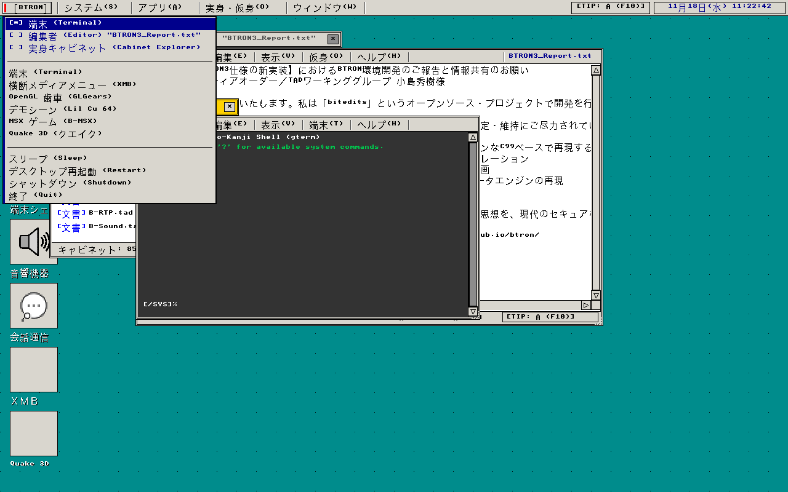
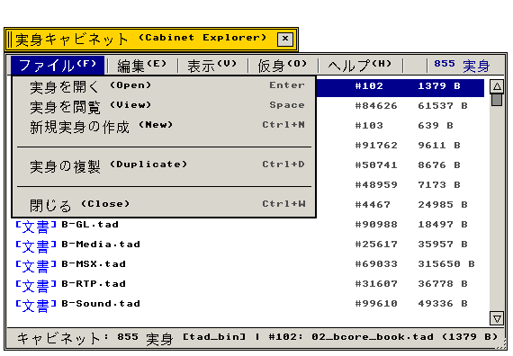
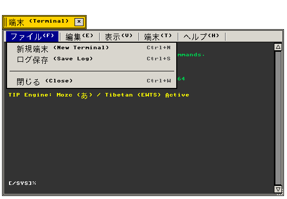
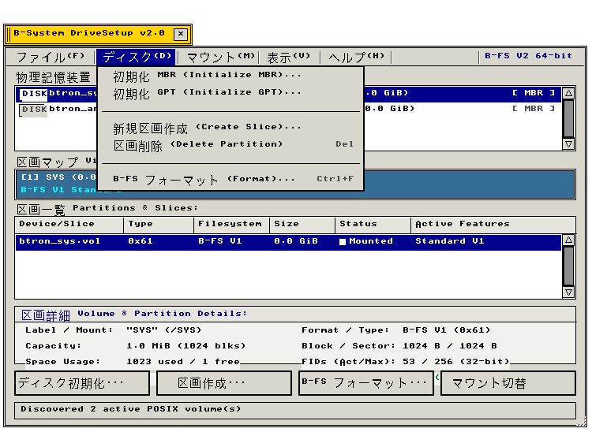
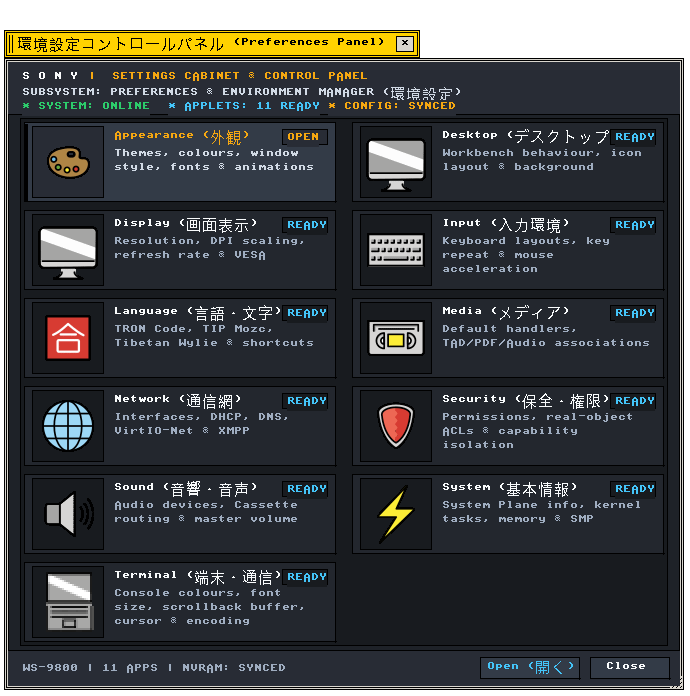
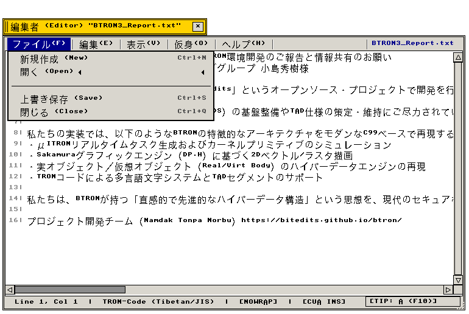

戦術通信・産業エッジにおける位置づけ (Tactical & Industrial Edge Positioning)
戦術司令部・車載 C4ISR (Warfare Command Post)
移動司令部（TOC）、装甲車載席、および通信統制卓では、戦術地図・暗号通信ログ・部隊実身キャビネット・システム端末を同時に重ねて視認する必要がある。BTRON_UI_LAPTOP は三段階プリエンプティブ合成（Clipper / Compositor / Presenter）により、割り込み制限下の堅牢 x86_64 UEFI SMP や Raspberry Pi 400 実機上でも 60 FPS の確定論的応答を維持し、外部ウィンドウサーバやクラウド依存を完全に排除する。
Designed for Tactical Operations Centers (TOCs) and armored vehicle mounts, BTRON_UI_LAPTOP renders overlapping maps, signal logs, and Real-Object cabinets via a deterministic tri-stage compositor on bare-metal x86_64 UEFI SMP and ARM64 (Pi 400) with zero external display-server attack surface.
産業エッジ SCADA / DCS 監視卓 (Industrial Edge HMI)
変電所保護継電盤、鉄道運行管理卓、プラント分散制御システム（DCS）、およびエッジ製造ラインでは、誤操作を物理的・視覚的に防ぐ標準計器群が不可欠である。LAPTOP シェルは TRON HMI 規格に準拠した 12 種の専用計器コントロール（トグル、三点スイッチ、ロータリ、バーメータ、状態ランプ、数値表示器等）を標準装備し、長期固定構成の産業エッジ機器に高い監査性と保守性を提供する。
Built for substations, rail dispatch desks, and factory-floor SCADA/DCS consoles, the LAPTOP shell ships 12 TRON-compliant industrial instrument controls—switches, rotaries, bar meters, status lamps, and digital readouts—guaranteeing auditable, long-lifecycle HMI parity across edge enterprise fleets.
対象解像度とアーキテクチャ (Requested Resolutions & Sources)
要求値 BTRON_RES が 800×600 以上を指定すると btron_desk_for_res() は LAPTOP を選択する。実装ソース：src/desktop/ui/desktop/、src/desktop/window/wnd.c、include/btron/desktop_res.h。
| BTRON_RES | 解像度 (Pixels) | プロファイル名 | 主な実機ターゲット |
|---|---|---|---|
| BTRON_RES_VESA_1280X1024 | 1280×1024 | VESA Desktop | x86_64 UEFI SMP 監視卓、Pi 400 HDMI |
| BTRON_RES_WORK_1024X768 | 1024×768 | Workspace Desktop | 車載堅牢パネル、QEMU VirtIO / T-Kernel |
| BTRON_RES_WS_800X600 | 800×600 | Workstation Desktop | 組み込み産業パネル PC、m68k / PC-98 |
実機フレームバッファ画面 (Native LAPTOP Framebuffer Captures)
仮想マシンや X11 を介さず、B-System のネイティブ C99 GDEV フレームバッファから直接抽出された LAPTOP シェルの実動画面。
Direct C99 headless framebuffer captures of the LAPTOP compositor, Real-Object Cabinet, terminal console, volume partitioner, and control panel.

グローバルメニューバー、多重ウィンドウ、実身キャビネット、システム端末が同時稼働する LAPTOP 基準画面。

戦術文書・設定・ログを階層的かつハイパーリンク構造で一元管理する BTRON 実身／仮身ブラウザ。

ANSI 準拠の対話型コンソールと CLU コマンド群。ネットワーク・ボリューム・タスク診断を直接実行。

MBR/GPT 多重区画イメージ（/SYS・/ANDERS・/CHOKANJI）の整合検証と配備管理。

外観・表示・入力・言語・通信網・音響・保全を統括する 10 大設定アプレット群。

仮身リンク埋込と Mozc/Wylie 多言語入力に対応した標準構造化ドキュメントエディタ。
計器コントロール一式 (Industrial Instrument Controls)
計器一式は LAPTOP の指令卓、車載席、および Raspberry Pi 400 産業パネルに標準搭載される。共通コントロール（チェックボックス、ラジオボタン、プログレス、スクロールバー、グループ、ラベル、テキストエリア、コンボボックス）と合わせて厳密な制御盤 UI を構成する。
The 12-control industrial instrument set ships exclusively on the LAPTOP tier (command post, vehicle mount, and Pi 400), complementing the standard desktop widget primitives.
| コントロール (Control) | 役割・操作意味論 (Role & Semantics) | 対応シェル |
|---|---|---|
| 押しボタンPush switch | 押下中のみ通電（モーメンタリ操作） | LAPTOP |
| トグルToggle switch | 二値状態の機械的ラッチ保持 | LAPTOP |
| 三点スイッチStandard triad | 三位置（AUTO / OFF / MANUAL 等）の確定選択 | LAPTOP |
| 上下セレクタUp/down selector | 離散ステップの段階的増減 | LAPTOP |
| ラジオセレクタRadio selector | 排他的モード群からの単一選択 | LAPTOP |
| ロータリRotary selector | 停止ノッチ位置までの回転切替 | LAPTOP |
| スライダーSlider volume | 連続量の直線アナログ調整 | LAPTOP |
| ダイヤルDial volume | 連続量の回転角アナログ調整 | LAPTOP |
| バーメーターBar meter | 出力・電圧・信号強度の帯状可視化 | LAPTOP |
| 状態ランプStatus lamp | 異常・稼働・待機の明滅インジケータ | LAPTOP |
| 数値表示Digital display | 固定幅の高視認デジタル計測値読取り | LAPTOP |
| 方向パッドUniversal pad | 上下左右の連続パン・照準・軸制御 | LAPTOP |